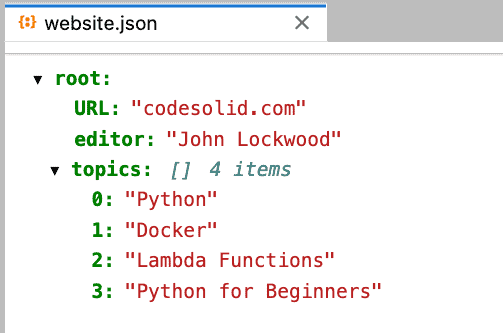

Python JSON: Easily Work With Dictionaries, Files, and Custom Objects¶
JSON (JavaScript Object Notation) is perhaps the most popular data-interchange format. Python has a built-in JSON package that lets you conveniently and quickly encode and decode JSON to and from Python dictionaries, which share a similar key/value structure but are much easier to manipulate in Python. This tutorial will show you how to work with Python JSON and dictionaries to encode and decode JSON.
In addition to serializing dictionaries to and from JSON strings, the Python json module also includes methods to write and read Python dictionaries as Python files easily. These methods are straightforward to use once you’ve seen how to serialize dictionaries to and from JSON strings.
In addition to dictionaries, however, you may have times when you want to read a custom Python object from JSON or serialize it back. In this case, there are at least two approaches we can take. There’s a little more involved than the dictionary case, but it’s nevertheless not difficult.
Let’s get started!
An Overview of the Python JSON Module¶
The Python JSON module is included with the Python standard library and gives you everything you need to work with Python JSON data. Before we begin a detailed discussion of this module, let’s briefly summarize the functions and classes exported by this JSON library and some non-library approaches we can take for custom classes.
| Programming Task | Python JSON Library Function or Class. Names assume: import json | Advantages | Disadvantages |
| Convert a Python dictionary to a JSON string | json.dumps | Extremely flexible and easy to use. Very little code. | Dictionaries as an internal data format are convenient but can be harder to maintain. Class members provide better documentation than dictionary keys of what an object should contain. |
| Convert a JSON String to a Python dictionary | json.loads | As above | As above |
| Write a Python dictionary object to a JSON file | json.dump | As above | As above |
| Read a JSON file to a Python Dictionary object | json.load | As above | as above |
| Reading and Writing a Custom Python Object to JSON | Approach 1: Add methods to the class itself. The JSON library may not be needed. | Convenient and obvious to readers of the class code. Methods is more likely to get maintained when the class changes. | Might lead to inconsistencies if it doesn't need to be done for all classes. Does not integrate with JSON package. May lead to invalid JSON. |
| Reading and Writing a Custom Python Object to JSON | Approach 2: Write a custom json JSONDecoder and JSONEncoder. | Allows JSON functionality to follow "single responsibility" principle. Doesn't add functionality to class that it doesn't need natively. | May be unclear that it needs to be maintained when class changes. Increases code complexity. |
The Easiest Way To Use JSON: The Python Dictionary Object¶
Python dictionaries are perfect for encoding and decoding JSON data because they:
Are easy to manipulate in Python
Share a similar key/value structure with JSON object data
Tip: If you need a refresher on dictionary objects, see our beginner article, Python Dictionaries for Beginners: A Complete Lesson With Exercises.
To encode Python dictionaries to JSON, we can use the json.dumps() method. This method accepts a Python dictionary as its input, and returns a JSON string. To remember the name of this method, think about dumping a dictionary into a string (hence, “dumps”). Here’s an example:
import json
from pprint import pprint
# Create a Python dictionary object
website = {"url": "codesolid.com", "editor": "John Lockwood", "topics": ["Python", "Docker", "Lambda Functions", "Python for Beginners"]}
# json.dumps - dump the dictionary to a JSON string
json_string = json.dumps(website)
print(f"Dumps convered a type, {type(website)} to JSON as a type, {type(json_string)}.")
print("String value:")
print(json_string)
Output:
Dumps convered a type, <class 'dict'> to JSON as a type, <class 'str'>.
String value:
{"url": "codesolid.com", "editor": "John Lockwood", "topics": ["Python", "Docker", "Lambda Functions", "Python for Beginners"]}
As you can see, the resulting JSON data string contains all the key/value pairs from our Python dictionary. Now let’s learn how to decode JSON data back into Python dictionaries.
To decode JSON strings back into Python dictionaries, we can use the json.loads() method. This method accepts a JSON string as its input and returns a Python dictionary. The name of this method is similar to the json.dumps() method– think about “loading” a string back into a dictionary (hence, “loads”). Here’s an example:
# Given our JSON String from earlier, print it
json_string = json.dumps(website)
print("The JSON string from dumps:\n", website, "\n")
# Reload it to a new dictionary and print the result
json_dictionary = json.loads(json_string)
print(f"Loads returns a type of {type(json_dictionary)} with a value of:\n{json_dictionary}")
The JSON string from dumps:
{'url': 'codesolid.com', 'editor': 'John Lockwood', 'topics': ['Python', 'Docker', 'Lambda Functions', 'Python for Beginners']}
Loads returns a type of <class 'dict'> with a value of:
{'url': 'codesolid.com', 'editor': 'John Lockwood', 'topics': ['Python', 'Docker', 'Lambda Functions', 'Python for Beginners']}
As you can see, the Python dictionary we get back from json.loads() is exactly the same as our original Python dictionary. JSON data and Python dictionaries share a lot in common– they both have key/value pairs, for example– which is why they map so well to each other. If you’re working with JSON data in Python, using dictionaries is the easiest way to get started.
Now that you know how to encode and decode Python dictionaries to JSON data, let’s talk about how to read a JSON file in Python and how to write JSON to a file.
Reading and Writing JSON files in Python¶
The Python json module provides two methods for reading and writing JSON files:
json.dump(): Writes Python data to a JSON file.
json.load(): Reads JSON data from a file into Python.
Both of these methods take two arguments: The Python data to write (or read) and the name of the file to write (or read) the data to. Here’s an example of how to use each method.
Writing A Python Dictionary to a JSON File¶
import json
file_name = "website.json"
# A Python dicitonary as before:
website = {"URL": "codesolid.com", "editor": "John Lockwood", "topics": ["Python", "Docker", "Lambda Functions", "Python for Beginners"]}
# Write the dicitonary to a JSON file.
with open(file_name, 'w') as outfile:
json.dump(website, outfile)
Jupyter Lab’s JSON viewer provides a well-formatted view of the file, but note that “root” is something added by the viewer, it’s not in the file itself:

Looking at the file in an editor, we can see that dump (to a file) writes exactly the same string as dumps (to a string) does.
Next, let’s load the file back to a Python dictionary.
Reading A JSON File to a Python Dictionary¶
Given the file we wrote before, we can load it using the json.load method. Just as dumps is analogous to dump, loads is analogous to load. The code is straightforward:
import json
file_name = "website.json"
with open(file_name, 'r') as infile:
website = json.load(infile)
print(f"Loaded a {type(website)} with vaulues\n{website}")
In summary, once again, using the json.dump() method is similar to using the json.dumps() method– we just need to specify a file name instead of a Python string. The json.load() method is similar to the json.loads() method, but again, we just need to specify a file name instead of a Python string.
So far, working with JSON in Python has been relatively straightforward and in keeping with the Python “batteries included” philosophy. In addition, however, the Python JSON library allows fine-grained control via custom encoders and decoders. These allow you to convert json data to and from Python objects that don’t look like Python dictionaries. This is useful if you’re working with JSON data that doesn’t quite fit the mold of a standard Python dictionary– for example, if your json data contains database records with fields that are not necessarily named the same thing as Python dictionary keys (i.e., “first_name” vs. “FirstName”). Another advantage to this approach is that classes, unlike dictionaries, tend to better document the state of a “valid object”, so from a maintainability perspective, they may be preferred. Technically speaking, you can add data elements dynamically to a class at any time, but in practice, programmers are sometimes more tempted to make ad hoc additions to dictionary keys than to class properties.
Reading and Writing Custom Python Classes to JSON¶
There are numerous approaches to loading custom Python objects from JSON and saving them again. This of course runs somewhat counter to what the Zen of Python tells us:
There should be one– and preferably only one –obvious way to do it.
Although that way may not be obvious at first unless you’re Dutch.
– import this
The Zen of Python, by Tim Peters
I’m not Dutch, so it seems to me there are a number of approaches, but let’s try to narrow it down to just two.
We can add the ability to convert the class to a JSON string and load a class from a JSON string to the class itself.
We can write code to interoperate with the python json module. The approach I’ve chosen here is a custom JSONEncoder and JSONDecoder.
Let’s show both of these approaches in turn, and to keep things simple, we’ll use the same class for all our examples:
class Restaurant:
def __init__(self, name: str, distance: float, favorite: bool):
self.name = name
self.distance = distance
self.favorite = favorite
You’ve probably already guessed that it was almost lunchtime when I came up with this example. Let’s see how we can add the ability to serialize these objects to Python using the two approaches above.
Serializing Python Classes To and From JSON Directly¶
The first approach is to add the methods to_json and from_json directly to the Restaurant class. These methods will take care of converting our objects to and from JSON strings. Here’s how that might look:
import json
class Restaurant:
"""demonstrates adding to_json and from_json methods to a custom class"""
def __init__(self, name: str, distance: float, favorite: bool):
self.name = name
self.distance = distance
self.favorite = favorite
def __repr__(self):
return f'Restaurant(name="{self.name}", distance={self.distance}, favorite={self.favorite})'
def to_json(self):
return json.dumps({
'name': self.name,
'distance': self.distance,
'favorite': self.favorite,
})
@classmethod
def from_json(cls, json_str: str):
dct = json.loads(json_str)
return cls(**dct)
# Basic test
bean = Restaurant("Bean Vegan Cuisine", 9.1, True)
print(f"Object: {bean}")
print(f"JSON version: {bean.to_json()}")
bean2 = Restaurant.from_json(bean.to_json())
print(f"Reloaded Object: {bean2}")
Output:
Object: Restaurant(name="Bean Vegan Cuisine", distance=9.1, favorite=True)
JSON version: {"name": "Bean Vegan Cuisine", "distance": 9.1, "favorite": true}
Reloaded Object: Restaurant(name="Bean Vegan Cuisine", distance=9.1, favorite=True)
Discussion: to_json¶
You’ll notice that in this example, we’ve kept the names in the JSON the same as in the class, but often when we’re inter-operating with JavaScript, we might change the names appropriately to match front-end naming conventions or other requirements. For a class like this that does not include any nested objects, we can implement to_json even more simply, as follows:
# Take advantage of __dict__ property on object to dump JSON, if no nested objects.
def to_json(self):
return json.dumps(self.__dict__)
If you need more precise control over the formatted string than what’s shown here, see Python Format Strings for some techniques you may find useful.
Discussion: from_json¶
We’ve implemented from_json as a @classmethod. This is appropriate because we want to be able to call it without an existing object, as we do on line 30. We take the approach of first loading the JSON string to a dictionary, then using the dictionary unpacking operator, “**”, on line 24, passing the result to the class itself. This has the effect of calling the __init__ method on the class and with the set of key/value pairs from the dictionary, so it assumes that the __init__ method has a parameter for all the keys, as is the case here.
Using JSONEncoder and JSONDecoder to Serialize Python Classes¶
Our other approach to working providing custom serialization and deserialization for a Python class is to create custom JSON encoders and decoders. Let’s see how that might look:
import json
from json import JSONEncoder, JSONDecoder
class Restaurant:
def __init__(self, name: str, distance: float, favorite: bool):
self.name = name
self.distance = distance
self.favorite = favorite
def __repr__(self):
return f'Restaurant(name="{self.name}", distance={self.distance}, favorite={self.favorite})'
class RestaurantDecoder(JSONDecoder):
"""Parses a JSON restaurant string to a Restaurant object"""
@staticmethod
def object_hook(dct):
return Restaurant(dct['name'], dct['distance'], dct['favorite'])
def decode(self, s: str):
return json.loads(s, object_hook=RestaurantDecoder.object_hook)
class RestaurantEncoder(JSONEncoder):
"""Encodes a Restaurant object to a JSON string"""
def default(self, obj):
if isinstance(obj, Restaurant):
return obj.__dict__
# Let the base class default method raise the TypeError , as shown here:
# https://docs.python.org/3/library/json.html
return json.JSONEncoder.default(self, obj)
cava = Restaurant("Cava", 3.1, False)
print(f"Original restaurant:\n{cava}\n")
cava_str = RestaurantEncoder().encode(cava)
print(f"Converted to JSON:\n{cava_str}\n")
cava_copy = json.loads(cava_str, cls=RestaurantDecoder)
print(f"Reloaded restaurant:\n{cava_copy}\n")
Output:
Original restaurant:
Restaurant(name="Cava", distance=3.1, favorite=False)
Converted to JSON:
{"name": "Cava", "distance": 3.1, "favorite": false}
Reloaded restaurant:
Restaurant(name="Cava", distance=3.1, favorite=False)
Custom JSONEncoder and JSONDecoder Discussion¶
In this code, we encode the custom restaurant object on line 34. Our RestaurantEncoder simply checks that we have the right type of class, and returns the __dict__ for the class. Our RestaurantDecoder consists of an object_hook method that we use to do the actual decoding and an override of the decode method which passes that object_hook to json.loads.
Although having a custom JSONEncoder and JSONDecoder worked well, it has increased the code complexity significantly over our original to_json and from_json implementation.
Closing Thoughts¶
For general JSON serialization and deserialization, the built-in Python module works extremely well. There are other, third-party libraries that provide additional functionality. Pydantic, for example, features a more convenient mapping of custom Python objects to JSON and also provides features to validate the data. One trade-off I have found in using Pydantic, however, is that the validation will slow the loading of large JSON data sets considerably. JSON is ubiquitous, convenient, and readable, but one still needs to be sensitive to the tradeoffs involved in reading and validating large data sets.
As we’ve seen, the JSON module is especially good and offers clear and simple methods for serializing dictionaries both to files and to strings. For custom Python objects, a little more work is involved, but the JSON module makes this relatively simple as well.
These are the basics of working with JSON data in Python. Now that you know how to encode and decode Python dictionaries to JSON strings, how to read and write JSON files, and how to customize the encoding and decoding of Python objects, you’re ready to start working with JSON data in Python like a pro!
If you want to learn more about Python, be sure to check out our other Python tutorials. Happy coding!